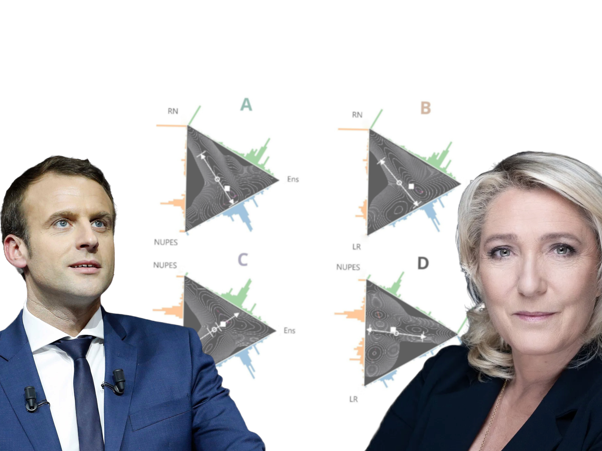

Building predictive models, time series analysis, and advanced machine learning solutions.

Designing and automating ETL pipelines, optimising workflows, and ensuring data integrity.

Deploying scalable data solutions using Docker and Azure for modern architectures.

Crafting compelling visualisations in Power BI, Tableau, and custom Python plots.
Exploratory data analysis, feature engineering and fine-tuning a model

With a combination of supervised machine learning and networks analysis.

Built ETL pipelines and data models to transform raw energy data into insights.
Developed novel methods to quantify political polarisation using Twitter data.

Developed a data software architecture for a fictional ridesharing company.

At age 19, I cycled from the south of Morocco to the south of England, over 4000 km.
I’ve climbed the highest peaks in 4 countries: Morocco (3400m), Zimbabwe (2592m), UK (1345m), and Ireland (1039m).

Now, I’ve visited 35 countries, and counting, and lived in 7 (Ireland, Zimbabwe, China, New Zealand, Australia, Denmark, and France).